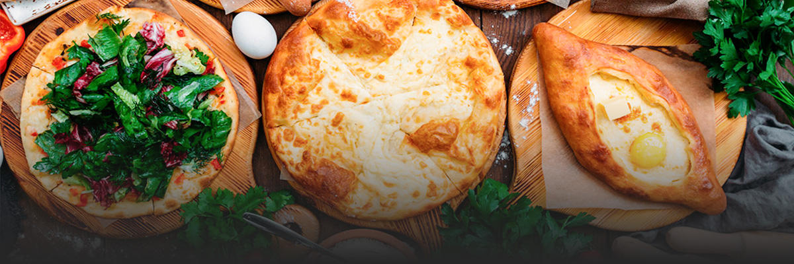

Самые свежие новости Новосибрской области
Рестораторы объяснили рост числа заведений грузинской кухни
За последние четыре месяца в городе начали работу два новых грузинских ресторана. На ближайшее время анонсировано открытие как минимум еще одного
В Новосибирске количество заведений грузинской кухни к началу 2024 года достигло 43. Они представляют собой разные форматы – от ресторанов премиум-класса до фастфуда. В планах рестораторов открытие еще нескольких точек общепита этого гастрономического направления.
Среди ресторанов национальных кухонь, работающих на новосибирском рынке, долгое время лидерами были итальянская и японская. Они и сейчас популярны, но новые заведения этих концепций практические не открываются. С грузинской кухней ситуация другая: она растет по всем показателям и популярна среди всех возрастных категорий.
«Грузинская кухня понятна и доступна. В «культурном коде» советского гостя и даже современного поколения есть особенная любовь к мясу, специям и тесту. А это главные продукты грузинской кухни, – рассказала BFM-Новосибирск PR-директор компании «ЯсноРестораны» Лана Васильева. – У нас 17 ресторанов грузинской кухни по стране. Четыре из них в Новосибирске, в том числе новый ресторан «Сулугули». Раньше это был ресторан восточной кухни «Чучвара», но мы изменили концепцию, проанализировав предпочтения клиентов. Посетители спрашивают о названии. Это игра слов: популярный сыр сулугуни и грузинская фраза «Сул Гулит», которая значит «всем сердцем». Гости сами любят блюда из сыра, отсюда и идея»
Рост популярности грузинской кухни отмечают во многих российских регионах, и везде называют одни и те же факторы, которые этому способствовали: доступность продуктов, туристический интерес к Грузии, память о советском прошлом. В Сибири еще одним фактором указывают климат.
«Если говорить о кулинарных привычках сибиряков и о влиянии климата на гастрономические предпочтения, то здесь грузинская кухня закрывает нишу быстрого и стопроцентного счастья. Запах свежеиспеченного хлеба из печи – это ключ к успеху в любом регионе, но в Сибири с ее морозами – особенно», – говорит бренд-шеф грузинских концепций (рестораны «ХОЧУ ПУРИ», «Хлеб и Нино», «Баклажани») Аваз Махкамов.